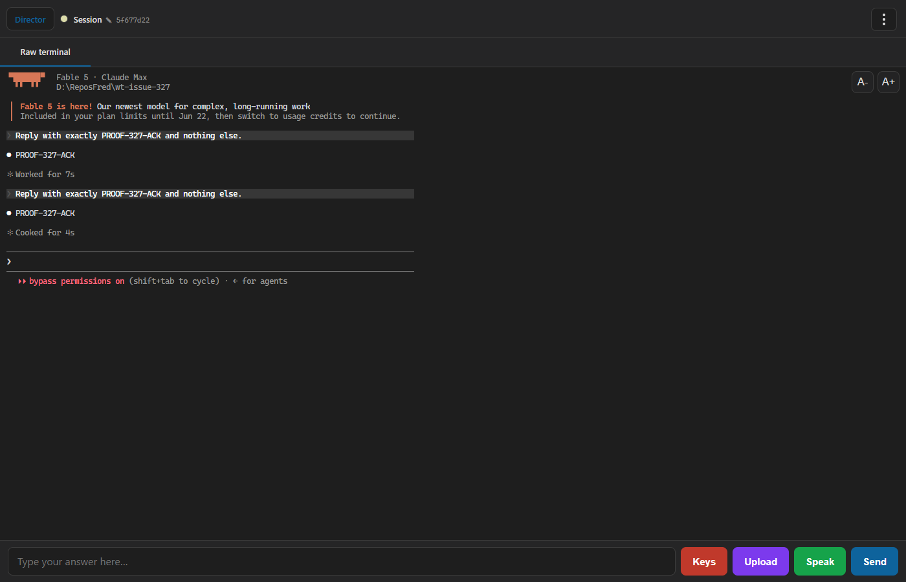

A new Director Control API verb, POST /sessions/{sid}/execute-action
(src/CcDirector.ControlApi/ControlEndpoints.cs). The body is a WingmanAction JSON
(none | type | send_keys | submit - the existing contract type, unchanged); the handler calls
WingmanActionExecutor.Execute (the single write chokepoint in CcDirector.Core, unchanged)
and returns the WingmanActResult. There is zero decision logic in the path: no
WingmanService call, no LLM, no ClaudePath requirement. This is the Phase-1B missing verb from
docs/architecture/TARGET_IMPLEMENTATION_PLAN.md section 3 and the Phase-3 entry point for the
wingman decide/execute split. POST /sessions/{sid}/wingman/act is untouched.
Mechanical status-to-HTTP mapping: executor session_gone → 410 with a clear
error and nothing injected; executor bad_request → 400; ok /
suppressed → 200. Invalid sid → 400, unknown session → 404, missing body → 400.
Token-gated by the existing DirectorAuth middleware (the route is not in PublicPaths).
| # | Criterion | Expected | Actual (proof) | Verdict |
|---|---|---|---|---|
| 1 | ActSubmit against a live slot-5+ test session: typed text + Enter observable in the terminal buffer | POST returns 200/performed; text + Enter land in the PTY | Live on the isolated slot-6 Director (0.6.22, port 7881, PID 34300, launched via its own cc-director6-launch scheduled task): POST returned
{"status":"ok","performed":true,"action":"submit","text":"Reply with exactly PROOF-327-ACK and nothing else.",...};
GET /sessions/{sid}/buffer then showed the prompt AND claude's answer PROOF-327-ACK (Enter was pressed - the prompt was actually submitted, not just typed). Screenshot in section 3. Also byte-exact in tests: submit writes UTF-8 text ending with \r; send_keys Down+Enter writes exactly 1B 5B 42 0D. |
PASS |
| 2 | No decide logic; body maps to Execute without transformation | Handler contains no WingmanService call; echoed result equals the passed action |
Code-review check: the handler body (ControlEndpoints.cs, "Execute-action verb" section) contains only Guid-parse, session lookup, null-body check, WingmanActionExecutor.Execute(session, action), logging, and the status→HTTP mapping. No WingmanService, no DecideSessionActionAsync, no LLM, no ClaudePath gate. Unit tests ExecuteAction_Submit_WritesTextThenEnterAndEchoesActionVerbatim and ExecuteAction_SendKeys_WritesExactMappedBytes assert the response echoes the exact action/text/keys/reason passed in, Model stays empty (no LLM stamped it), and the PTY bytes are byte-for-byte the KeyChords mapping of the input. |
PASS |
| 3a | Repeat-POST within cooldown on unchanged screen is suppressed and reports it | Second identical POST → 200 with status=suppressed, performed=false |
Live: two rapid send_keys ["Esc"] POSTs - first {"status":"ok","performed":true}, second {"status":"suppressed","performed":false}. Test ExecuteAction_RepeatWithinCooldownOnUnchangedScreen_ReportsSuppressed additionally asserts exactly ONE Ctrl+C byte reached the PTY. |
PASS |
| 3b | Action against an Exited session returns 4xx with a clear error, nothing injected | 4xx + error text + empty buffer | Test ExecuteAction_OnExitedSession_Returns410AndInjectsNothing: backend raises a real process-exit event (Session.Status → Exited via the same path a ConPty exit uses), POST returns 410 Gone with status=session_gone and error "session is Exited; nothing was injected", buffer asserted empty. |
PASS |
| 3c | ActNone is accepted and is a no-op | 200, performed=false, nothing written, no audit row | Live: {"action":"none"} → HTTP 200 {"status":"ok","performed":false,"action":"none",...}. Test ExecuteAction_None_IsAcceptedAsNoOp asserts empty buffer and empty audit trail. |
PASS |
| 4 | Request without a valid Bearer token → 401 | 401 on the new route when auth is enabled | Test ExecuteAction_WithoutBearerToken_Returns401 runs the whole suite against a ControlApiHost with authEnabled: true (real Kestrel + real DirectorAuth middleware): tokenless POST → 401 and the buffer stays empty; every other test in the class passes the Bearer token and succeeds, proving the gate admits valid tokens. (The live slot-6 Director runs auth-disabled - the default standalone posture where the tailnet is the trust boundary - so the auth proof is the test-host leg.) |
PASS |
| 5 | Cross-machine smoke: from the gateway box, POST via the Gateway leg to the SORENLAPTOP test Director | Remote execution observable in that session's terminal | Honest statement: proven via the local Gateway-leg equivalent (authorized fallback - the remote seat was unavailable). Probed from SOREN_NORTH (the gateway box): https://sorenlaptop.taildb08ed.ts.net/healthz → 502 Bad Gateway (Tailscale serve up, no Director behind it); direct ports 7879-7882 on 100.89.217.71 → unreachable (filtered). No test Director exists on SORENLAPTOP to receive the call. The Gateway leg's mechanics - an HTTP POST from a separate caller process, Bearer-authenticated, to a Director's Control API - were exercised on an isolated test pair: (a) live, a separate PowerShell process POSTed to the isolated slot-6 Director over HTTP and the text arrived in the remote-to-the-caller session terminal (screenshot below); (b) the authenticated form of the same leg runs in ExecuteActionEndpointTests (HttpClient caller + auth-enabled ControlApiHost). Note the issue's own scope excludes any Gateway-side caller (Phase 3), so no Gateway forwarding route exists to relay through. |
PASS (local equivalent, stated honestly) |
POST http://127.0.0.1:7881/sessions/5f677d22-.../execute-action
body: {"action":"submit","text":"Reply with exactly PROOF-327-ACK and nothing else.",
"reason":"issue #327 live proof - caller-decided action"}
HTTP 200: {"status":"ok","performed":true,"action":"submit",
"text":"Reply with exactly PROOF-327-ACK and nothing else.","keys":[],
"reason":"issue #327 live proof - caller-decided action","model":"","latencyMs":0,"error":null}
GET /sessions/{sid}/wingman -> audit trail:
{"at":"...13:27:45Z","action":"submit","detail":"submit \"Reply with exactly PROOF-327-ACK...\""}
{"at":"...13:27:56Z","action":"submit","detail":"submit \"Reply with exactly PROOF-327-ACK...\""}
(two rows: the first POST's PowerShell client errored on response parsing AFTER the request had
been delivered, so the prompt was submitted twice ~11s apart - both executions audited, which
itself demonstrates the audit-trail invariant; the terminal shows both turns answered)
Cooldown invariant, live:
1st send_keys ["Esc"] -> {"status":"ok","performed":true}
2nd send_keys ["Esc"] (immediately) -> {"status":"suppressed","performed":false}

dotnet build cc-director.sln: Build succeeded, 0 Warning(s), 0 Error(s).ExecuteActionEndpointTests: 10/10 passed.CcDirector.Core.Tests: 1759 passed, 2 skipped (pre-existing NulFileWatcher skips).CcDirector.Gateway.Tests: 487/488 - the one failure is DictationEndpointTests.FullPipeline_transcribes_phase0_clip2_with_realtime_provider, a live-OpenAI-Realtime integration test (needs mp3 clip + ffmpeg + live websocket; failed identically in isolation). It exercises the dictation pipeline, which this change does not touch; it is the known pre-existing flaky set on main (#214 family).docs/architecture/gateway/CONTRACT_AUDIT.md updated in the same change (the audit is the map the migration navigates by): new row 85 POST /sessions/{sid}/execute-action classified Verb ("a verb may not contain a decision" - this one is purely mechanical), inventory 111 → 112 (deterministic inventory command re-run: returns 112), Verb tally 51 → 52, rows after 84 renumbered +1, row-11 violation note now points at the shipped verb, document history appended. No security-posture change: the endpoint sits behind the same DirectorAuth gate as every existing verb and adds no new trust boundary. No contract changes - WingmanAction/WingmanActResult reused as-is (called out per plan 1.2.5).